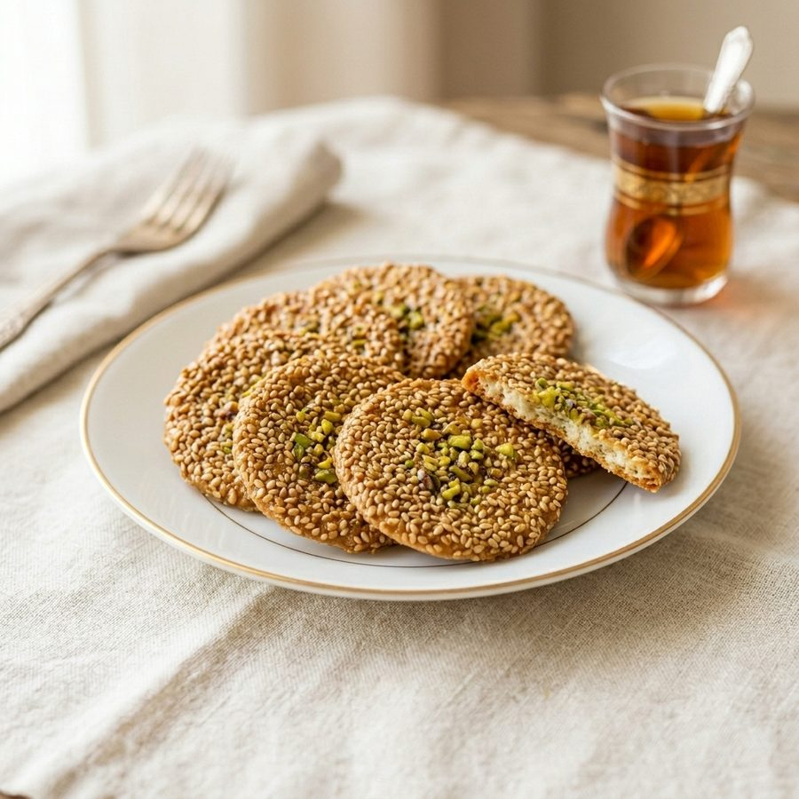
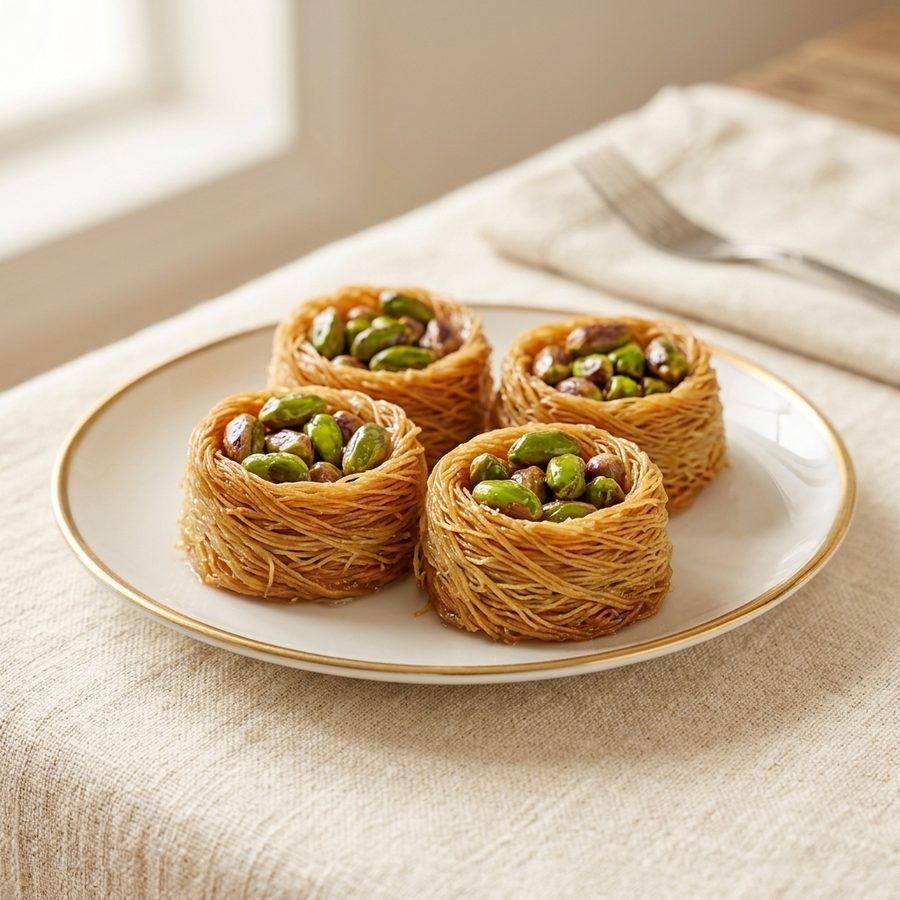
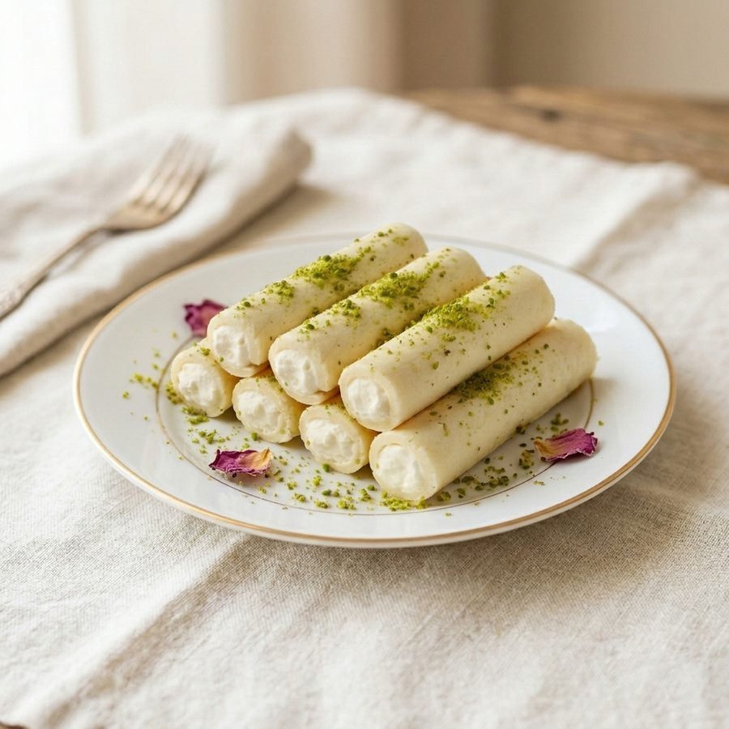
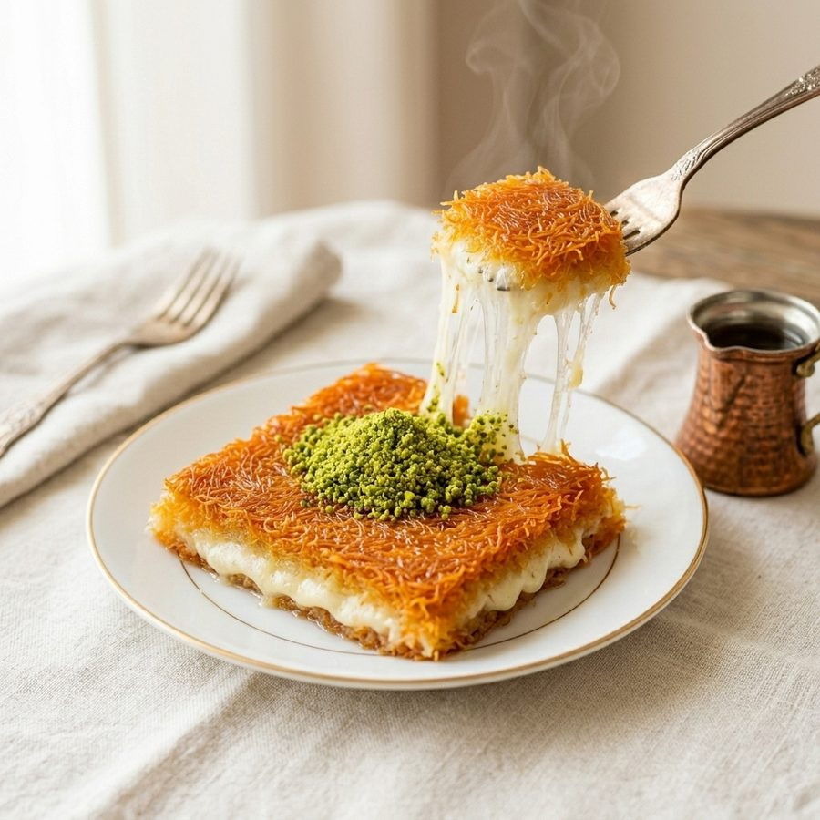
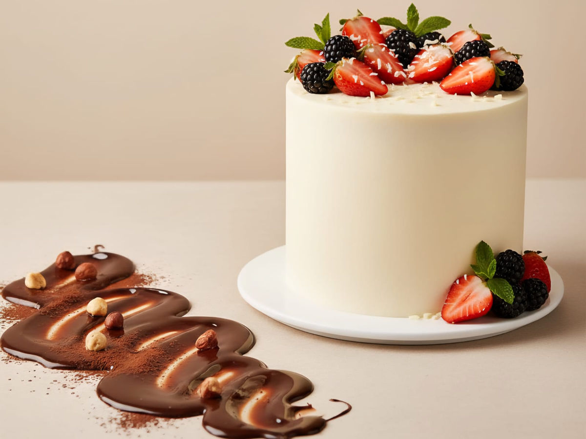

دمشق
Damaskus
Syriens Hauptstadt. Aus dem alten Viertel al-Midan stammen die hauchdünnen Barazek mit Sesam und Pistazien.
Barazek · Ghraybeh · MaamoulSyrian Star · Schustergasse 14 · Darmstadt
Treten Sie an unsere Theke: Künefe, Baklava, Mabrumeh & mehr – frisch, mit Aleppo-Pistazien und viel Liebe gemacht.
Runterscrollen, um an die Theke zu treten
Ziehen zum Drehen
Woher unsere Rezepte kommen

Syriens Hauptstadt. Aus dem alten Viertel al-Midan stammen die hauchdünnen Barazek mit Sesam und Pistazien.
Barazek · Ghraybeh · Maamoul
Die Stadt der Pistazien. Die kleine, tiefgrüne Aleppo-Pistazie (Halabi) steckt in Mabrumeh, Baklava und den Nestern.
Mabrumeh · Baklava · Nester
Die Stadt am Orontes ist berühmt für Halawet el Jibn: zarter Käse-Grieß-Teig, gefüllt mit Sahnecreme.
Halawet el JibnUnser Star: Künefe كنافة
Künefe (arabisch Knafeh) ist das Herz der syrischen Süßspeisen. Tippen Sie auf die Punkte im Bild – oder lehnen Sie sich zurück, wir zeigen es Ihnen.

Fein gemahlener Teig (Na‘ameh) mit Butterschmalz, im runden Blech goldorange gebacken. Nach dem Backen wird das Blech gestürzt – so liegt die Kruste oben.
Darunter eine dicke Schicht Nabulsi- oder Akkawi-Käse, vorher entsalzt. Warm ist er weich und zieht lange Fäden.
Heiß übergossen mit Ater – Zuckersirup mit Zitrone und einem Hauch Rosenwasser. Er macht die Kruste glänzend und süß.
Zum Schluss gemahlene Aleppo-Pistazien obendrauf – für Farbe, Duft und den feinen nussigen Biss.
Das Süßigkeiten-Lexikon
Viele unserer Spezialitäten kennt man in Deutschland noch nicht. Jede Karte zeigt, wie die Sorte aussieht. Antippen zum Umdrehen – auf der Rückseite steht, was drin ist.
Kleines Wörterbuch
Zum Mitnehmen & Verschenken
Sorten antippen, Größe wählen, per WhatsApp vorbestellen – wir packen Ihre gemischte Schale frisch, zum Abholen in der Schustergasse.

Für Ihren besonderen Tag Torten & Kuchen auf Bestellung Für Geburtstage, Feiern und besondere Anlässe – in drei Größen. Mehr in der Speisekarte →Besuchen Sie uns